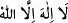
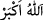
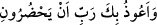
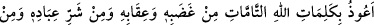
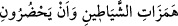

Hasan Basrî şöyle demiştir: “Rasûlullah (a.s.) namaza başlarken üç defa “__WORD__
üç defa “__WORD__ ve ardından:
derdi. “Allah’ım şeytanların vesvese ve kışkırtmalarından; şeytanın hemzinden
(dürtmesinden), nefsinden (peltek se ile tükürmesinden) ve nefhinden (üfürmesinden)
sana sığınırım. Onların yanımda bulunmalarından da sana sığınırım.” Şeytanın hemzi
ile delilik; nefsi (peltek se) ile şiir ve nefhi ile kibir kasdedilmektedir.[96]
Rivayet edilir ki bir kimse uyku tutmamaktan şikayet etti. Bunun üzerine Hz.
Peygamber (a.s.) ona: “Uyumak istediğin zaman şöyle de:
“Allah’ın gazabından, cezalandırmasından, kullarının şerrinden, şeytanların
dürtmelerinden ve yanımda bulunmalarından Allah’ın tam kelimelerine sığınırım.”
buyurdu.[97]
“Allah’ın kelimeleri” peygamberlerine indirdiği kitaplarıdır veya izzet ve kudret gibi
Allah’ın sıfatlarıdır. Eksiklikten ve kopup ayrılmaktan âzâde olduğu için de“tam”
olarak vasfedilmiştir.
Bazıları der ki: “Bu, Allah’tan gayrıya iltifatı kalan kimsenin makamıdır. Varlıkta
Allah’tan başkasını görmeyecek kadar tevhid denizinin derinlerine inen kimse ise ancak
Allah’a sığınır ve ancak Allah’a ilticâ eder. Nebî (a.s.) bu makamdan terakkî edince:
“Senden Sana sığınırım” buyurdu.[98]
Hz. Peygamber (a.s.) helâya girince:
“Allah’ım pislikten ve kötü varlıklardan” yâni cinlerin pislikle sıfatlanan erkek ve
dişilerinden “sana sığınırım.” derdi.[99]
Ümmet, Hz. Peygamber (a.s.)’ın ismet sıfatına sahip olduğu konusunda icmâ etmiştir.
Çünkü O’nun beraberinde olan cin müslüman olmuştur. Ya da şeytanın arzusu/vesvesesi
O’ndan sökülüp çıkarılmıştır. Şu halde O’nun şeytandan sığınmasından maksad
başkalarını şeytanın şerrinden sakındırmaktır.
Şeytan insanların gönüllerine vesvese verir. Erkek kadın herkesi kandırmaya çalışır.
Şerli kimseleri bid‘atlara ve nefsânî arzulara düşürür.